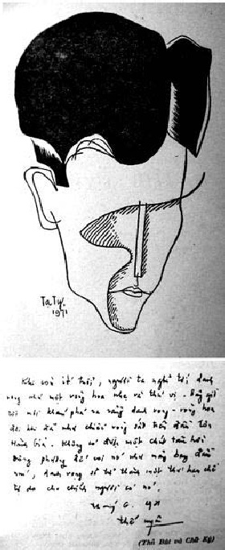

Tên: Nguyễn Kim Dũng. Bút hiệu: Thế Uyên. Ngày sinh phỏng định: 16-3-1935 tại Cửa Ô Yên Phụ, Hồ Tây, Hà Nội. Ngày sinh đúng: 14 tháng 8 năm Ất Hợi. Viết văn từ năm 1960.

Thế Uyên và thủ bút.
Tác phẩm:
1. Những hạt cát, truyện ngắn, 1964, Thời Mới xuất bản lần 1, 2 và 3
2. Mưa trong sương, kịch, Thời Mới xuất bản, 1964
3. Ngoài đêm, truyện ngắn, Nguyễn Đình Vượng xuất bản, 1965, Khai Trí tái bản 1970
4. Mười ngày phép của một người lính, đoản văn, Nam Sơn xuất bản, 1965, Khai Trí tái bản, 1971
5. Những ý nghĩ của bọt biển, đoản văn, Nam Sơn xuất bản, 1966
6. Nỗi chết không rời, truyện ngắn viết chung với Duy Lam, Nguyễn Đình Vượng xuất bản, 1966, Văn Uyển tái bản, 1969
7. Tiền đồn, truyện dài, Thời Mới xuất bản 1967, Khai Trí tái bản, 1971
8. Nghĩ trong một xã hội tan rã, tiểu luận, Thái Độ xuất bản, 1967, tái bản 1969
9. Bản tình ca, truyện ngắn, Thái Độ xuất bản, 1968
10. Chiến tranh cách mạng, tiểu luận, viết 1965, bổ túc 1968, Thái Độ xuất bản, 1968
11. Những người đã qua, đoản văn, Văn Uyển xuất bản, 1968
12. Kỹ thuật tuyên truyền chính trị, dịch J.M. Domenach, Thái Độ xuất bản, 1969
13. Tình dục, tuyển dịch Quốc Tế, Thái Độ xuất bản, 1969
14. Căn nhà người mẹ, đoản văn, Trí Đăng xuất bản, 1971
15. Đoạn đường chiến binh, đoản văn, Lá Bối xuất bản, 1971
16. Tiểu luận 3, Thái Độ xuất bản, 1971
17. Mưa trong sương, truyện ngắn, Nguyễn Đình Vượng xuất bản, 1971
Đã cộng tác với: Tân phong, Văn học, Bách khoa, Khởi hành (Chí), Chính luận, Tiếng nói dân tộc, Điện tín (Báo), v.v.
Thế Uyên và ý thức cách mạng trong văn chương
"Xã hội tác động vào con người làm con người có phản ứng là suy nghĩ. Suy nghĩ đưa đến kết quả là sự lựa chọn một thái độ. Thái độ này như thế nào tùy thuộc tâm hồn từng người: thái độ lớn, rõ rệt, sâu đậm là thái độ của các tư tưởng gia, các vĩ nhân tạo thời thế. Thái độ nhỏ, mơ hồ, mờ nhạt là thái độ của con người thông thường…"
(Thế Uyên)
Thế Uyên, nhà văn trẻ đã vào đời bằng một thái độ. Thái độ đó được hình thành và xuyên qua văn chương để chấp nhận hay phản đối những gì mà nhà văn cảm thấy, nghĩ tới, do đời sống đưa lại với từng dữ kiện hiển nhiên, xác thực.
Trên nguyên lý, văn chương là một-cái-gì phù phiếm, nhằm mục đích đánh lừa thực tại, để ru người đọc vào một khung cảnh, một thế giới nào đó, do óc tưởng tượng của nhà văn thích như vậy, muốn như thế. Nhưng ngoài nguyên lý trên, đích thực, văn chương còn có khả năng và nhiệm vụ: chuyên chở, phổ biến từng sự việc hay những sự việc, từ một tâm hồn đến muôn vạn tâm hồn để tỏ bày thái độ. Thái độ của cá nhân, có thể đúng, có thể sai đối với đa số, nhưng thái độ là một cần thiết cho mỗi con người làm văn học nghệ thuật để chứng minh giá trị qua cá tính độc đáo và sung mãn ở mỗi cương vị người cầm bút. Sự thực, ở đời con người cứ sống mà không cần thái độ, cũng như không phải nhờ xã hội tác động mới biết suy nghĩ, hoặc có thể cứ suy nghĩ mà chẳng cần bày tỏ hay chọn lựa gì cả theo định nghĩa của Pascal: con người là một động vật siêu hình (l’homme est un animal métaphysique).
Những người làm văn học nghệ thuật hôm nay, họ đã can đảm nhìn vào sự thực, tức là cái nhìn vào bản chất đích danh của đời sống cũng như con người trực diện, để nhận xét và phán đoán, đôi khi quá nghiêm khắc ngay cả với mình.
Thế Uyên bước vào văn học với thái độ cứng rắn của lứa tuổi trên 20. Cái nhìn, cái biết và cái hiểu của Thế Uyên đối với cuộc sống đều đi qua chiến tranh, bất công của mỗi số phận, trong guồng máy sinh hoạt thường nhật do xã hội hình thành và chi phối. Bởi đó, mỗi xúc động, mỗi suy nghĩ của Thế Uyên đều chứa chấp trọn vẹn sự hờn giận, phẫn nộ pha thêm đớn đau, chua xót! Khởi hành từ trạng thái trên, Thế Uyên đã bày tỏ từng ý nghĩ bỏng cháy của mình qua rất nhiều khía cạnh, ở đấy, mọi sự kiện được trình bày đều nhuốm màu bi thương, phẫn uất, ngay cả vấn đề tình yêu.
Thế Uyên bước vào nghề văn không do tình cờ hay được hỗ trợ bởi hoàn cảnh, mà hiển nhiên là sự dấn thân, một tình nguyện. Khi cuộc Cách mạng tháng Tám 1945 thành công, cả dân tộc Việt Nam hò reo ăn mừng độc lập, Thế Uyên mới được 10 tuổi, còn ấu thơ, chưa qua khỏi ngưỡng cửa Tiểu học. Rồi chiến tranh toàn quốc chống Pháp bùng nổ hơn một năm sau, Thế Uyên cũng vẫn còn nguyên là đứa bé lẽo đẽo theo gia đình tản cư chạy loạn. Nói về ý thức lúc ấy, quả thực Thế Uyên chưa có một chút ý thức nào về cuộc sống, về chiến tranh cũng như hoàn cảnh chính trị với Nhất Linh, Hoàng Đạo và nhóm Tự Lực Văn Đoàn là những phần tử đối nghịch với Cách mạng dạo đó. Nếu có biết một phần rất nhỏ nào về "huyền thoại hoạt động" của các chú, các bác cũng đều do sự "nghe lỏm" giữa những câu chuyện mà người lớn trao đổi với nhau, hoặc do bố mẹ nói lại khi đã trưởng thành.
Nhưng có điều chắc chắn, không phải vì những hào quang chiếu tỏa từ Nhất Linh, Hoàng Đạo hay Thạch Lam mà Thế Uyên mơ ước đến sự nghiệp văn học sau này, mà đích thực cuộc sống với những mâu thuẫn cùng thân phận con người trong cuộc chiến, đã thấm dần vào cơ thể cũng như tâm tư của Thế Uyên những giọt cường toan, làm chết dần hồn nhiên và phóng khoáng thay vì phải có, ở trong tâm hồn đang tuổi thanh niên. Bởi vậy, những dòng đầu tiên của người trai trẻ, ngoài hai mươi, trút xuống mặt giấy đã mang nặng nỗi bỏng cháy, giãy giụa của thân phận làm người trước những sự kiện tưởng như không có phương thế sửa chữa, dù phương pháp hành văn của Thế Uyên lúc đầu, một phần chịu ảnh hưởng của nhóm Tự Lực Văn Đoàn. Sự chịu ảnh hưởng ở đây, những bước đầu khai phá, Thế Uyên không thể tránh được, muốn tránh cũng chưa đủ sức vì tài năng còn bị bủa vây trong không khí Đoạn tuyệt, Hai buổi chiều vàng, Bướm trắng của Nhất Linh hay Sợi tóc của Thạch Lam, v.v. Thế Uyên chắc cũng đoán biết điều đó, nên tự mình gỡ khỏi những ám ảnh. Chỉ trong thời gian ngắn, nhà văn đã tự tạo một bút pháp, một chỗ đứng trong nền văn nghệ Việt Nam. Nhưng Thế Uyên không chỉ mong có thế, muốn dùng văn chương để trình bày suông những gì nghĩ về thế hệ mình, về xã hội, mà đích thực, để xác định một vị trí và chiều hướng sáng tạo được ấn định rõ ràng trong tâm thức, dù tình yêu hay căm thù. Thế Uyên cũng bị cuốn vào cơn bão thác loạn của vấn đề dục tình, tuy chẳng mới mẻ gì, nhưng cũng làm choáng váng tâm trí, kèm theo là thực trạng của một xã hội xấu xa và tội lỗi.
Sự có mặt của nhà văn, có phải để gánh chịu buồn rầu, thê thảm và sầu não trước những vật vã khóc than của bao nghịch cảnh? Việc nhận thức đời sống, có được phán xét bằng sự sáng suốt, vô tư trước những đối tượng nhiều lúc ghê tởm, bỉ ổi? Lòng thương xót của nghệ sĩ phải chăng là một bổn phận đối với tha nhân? Tất cả, như những mắt lưới quây chặt lấy ưu tư – dù thầm kín – ở nội tâm của mỗi người làm văn nghệ.
Trong nghệ thuật, Thế Uyên muốn tự mình bay bổng lên cao và có đầy đủ quyền hành trong công việc sáng tác, vì nghệ thuật không thể dối trá hay ngụy trang, nó phải chân thành và tự do tuyệt đối, trong mọi vấn đề liên quan giữa suy nghĩ, con người và cuộc sống. Bởi vậy, mỗi lời nói, mỗi chữ viết không nhằm vào một trường hợp riêng rẽ, nó được điều hợp từng sự việc đi vào môi trường chung của nghệ thuật để tạo xúc động, tức là đóng góp vào công cuộc khai phóng đời sống với tìm tòi, khám phá bằng ý thức tiến bộ. Một số người cho rằng, văn Thế Uyên kém đạo đức, dâm đãng trong ngôn từ khi đề cập tới một vài trường hợp tình yêu và tuổi trẻ, vì chịu ảnh hưởng và vay mượn những ý nghĩ của Tây phương buông thả sau Đệ nhị thế chiến, hoặc bị mặc cảm dồn nén nên mới thác sinh ra những ngôn ngữ sượng sần làm đỏ mặt các nhà mô phạm.
Thế Uyên, một nhà văn trẻ, lớn lên trong chiến tranh và chấp nhận cuộc chiến này là có thực, cũng như sự có mặt của đời sống là hiển nhiên với mỗi thân phận, dù trai hay gái. Khi đề cập tới tình yêu trong những truyện đầu tay, lẽ dĩ nhiên (đây là mảnh đất thánh cho những cây viết trẻ) khuôn thức tình ái lứa đôi với những đòi hỏi cháy rừng rực ở trong lòng người con trai trên 20 tuổi phải là một ám ảnh, một thôi thúc cần phải tỏ bày và tỏ bày chẳng những với mình, còn với người.
Người đọc có thể nhận định về Thế Uyên qua Những hạt cát, tập truyện, do Thời Mới xuất bản (1964) với những đoạn văn:
… Quay lại, Duy thấy Hằng đã đương đứng trên cùng một cành, một tay nắm cành, một tay khoái chí đưa trái sung vào miệng. Nàng cố men ra phía Duy ngồi.
"Hằng ngồi xuống kia. Đi thế ngã đừng có trách".
Thiếu nữ lắc đầu cười, nhét nốt nửa trái ăn dở vào miệng: "Hằng biết bơi mà, có ngã cũng không sao…"
Nàng giơ tay ném vài quả về phía Duy. Tay vung lên quá mạnh, Hằng mất đà loạng choạng. Duy chưa kịp cử động, thiếu nữ đã ngã xuống ao. Nước tóe lên trắng xóa. Duy hoảng hốt, tay run lên, cành lá giao động. Nhưng Hằng đã ngoi lên tóc rũ bết xuống trán. Nàng vừa cười vừa ho sặc sụa leo lên bờ:
"Lâu lắm mới được tắm ao nhà…" Quần áo đẫm nước, lụa mỏng bám sát vào da thịt. Thiếu nữ cúi xuống, đột nhiên im bặt. Người Duy nóng lên như hồi nhỏ những hôm trời nóng, nấp trong chăn chơi đi trốn. Một cảm giác buồn buồn như có một con vật gì bò dọc theo sống lưng, mắt chàng không thể rời thân thể ướt nước trước mặt. Thiếu nữ rùng mình kêu lên: "Anh!… Quay đi anh…"
(Những hạt cát, trang 9)
… Có một lần Hằng đứng ngoài cổng, giơ tay với một cành hoa ti-gôn. Nàng rướn mình, ngực hiện rõ dưới làn áo mỏng. Duy muốn đặt tay lên, nhưng vội vã xua đuổi ngay ý tưởng ấy. Chàng vẫn chủ trương tình yêu tinh thần và tình yêu xác thịt phải cách biệt… Nhưng sau đó, Hằng đã nhiều lần bắt gặp thấy chàng đang nhìn ngực hay nhìn đùi mình một cách chăm chú. Duy cố gắng xua đuổi, kềm hãm lòng thèm muốn sôi nổi trong người.
Nhưng càng tìm cách kềm hãm, Duy càng thấy thèm muốn mãnh liệt. Chàng mê say thân thể mềm ấm đầy mùi hương quyến rũ, tìm đủ cơ hội để có thể ôm được trong tay. Thiếu nữ ngoan ngoãn và tin cậy, nhưng mỗi lần tay người đàn ông chạm vào ngực, nàng thường rùng mình và đẩy ra…
(Những hạt cát, trang 120)
Hai đoạn văn trên đã phản ánh trung thực cái dục tính phát sinh ở trong lòng người con trai mới lớn và sự xâm chiếm thể xác lúc này mới chỉ là một dự định, trong đó còn ẩn nấp e dè, ngượng ngập, hơn nữa, về phía người con gái, vẫn là gìn giữ, là một "kinh dị" ở trên đời, cần phải né tránh. Ngôn từ và ý tưởng của truyện rất gần không khí Bướm trắng:
… Trong lúc Thu ăn bánh, Trương ngồi nhìn chăm chú vào đôi môi Thu, Thu ăn dở một chiếc vừa đặt xuống, Trương cầm ngay chiếc bánh dở ăn nốt:
"Cả đời anh chưa bao giờ ăn chiếc bánh nào ngon hơn".
Thu thẹn nóng bừng cả mặt. Nàng hơi lo sợ, bất giác đưa khăn tay lên lau miệng. Trương hiểu ý:
"Em không sợ, anh không dám xúc phạm đến em, anh chỉ xin em cho phép anh cầm lấy bàn tay em trong một lúc, một lúc thôi".
(Bướm trắng, trang 121)
Nhất Linh đã viết về tình yêu như thế cách đây ba, bốn chục năm, khi nền luân lý cổ truyền phương Đông còn đè nặng trong tâm trí của mỗi con người Việt Nam thuộc mọi thành phần xã hội. Hầu hết những cuộc tình được đề cập tới trong tác phẩm của nhóm Tự Lực Văn Đoàn đều mang mẫu số chung, nghĩa là nó thuộc vào thứ tình yêu cao thượng, lý tưởng, tuy rằng các nhà văn, nhà thơ thuộc nhóm này đều theo Tây học, có tinh thần tiến bộ, muốn cải tạo xã hội Việt Nam lúc ấy bằng văn chương, trong khi sách của Flaubert với Madame Bovary, D.H. Lawrence với L’amant de Lady Chatterley cùng Phân tâm học của S. Freud đã xâm nhập vào thị trường văn hóa Việt Nam từ lâu. Nhưng hoàn cảnh và vị trí của các nhà văn, chẳng những thuộc nhóm Tự Lực Văn Đoàn, mà hầu hết các người làm văn nghệ thuở ấy (1930-45) đều không thể và không dám vượt qua bức tường luân lý quá chắc và quá cao được trấn giữ bởi các ông thầy Khổng – Mạnh.
Nhưng hôm nay là chuyện khác. Các nhà văn trẻ, tương đối đã được hoàn cảnh hỗ trợ và xã hội mặc nhiên thừa nhận giá trị suy tưởng tùy theo quan niệm và nhãn giới của mỗi thành phần nằm trong tập thể. Những ý nghĩ của nhà văn, đôi khi quá táo bạo, quá lộ liễu, quá trần truồng được phô bày dưới mắt người đọc ở cả hai khía cạnh: chiến tranh và tình yêu. Chiến tranh từ lâu đã trở thành một ám ảnh, một dằn vặt đè nặng trong tâm trí những người trai trẻ còn đang ngồi ghế nhà trường, do đó, một khi có hoàn cảnh, được dịp tỏ bày là họ không ngần ngại nói thẳng những gì cần phải nói trước công luận.
Tập Những hạt cát gồm 6 truyện ngắn, cả 6 truyện đều mang nội dung từa tựa nhau, nghĩa là dùng những sự kiện hiển nhiên để chuyên chở từng ý tưởng u uẩn được ngụy trang qua câu chuyện tầm thường, coi như không có gì mà đích thực, nó gói trọn một thái độ, một cưỡng chống với một trật tự, một cương tỏa nào đó:
… Tôi thiếp đi trong mệt mỏi, mơ thấy Nương lơ lửng trên trời xanh, lượn như một con bướm mới hong khô cánh. Tôi vẫy gọi, tôi gào thét. Nương cười, môi đẫm máu rồi đột nhiên rơi xuống, thân thể trần truồng giãy giụa trên hàng rào kẽm gai bao quanh đồn. Tôi bừng tỉnh giấc, mồ hôi thấm ướt lưng áo. Tôi lắng nghe. Đêm im lặng khác thường. Một vài tiếng ho khan ngoài sân buồn bã. Chắc địch sắp đánh đồn. Như thế cũng hay.
(Những hạt cát, Người lính lê dương, trang 48)
… Vô lý và vô ích. Tất cả triết thuyết bập bềnh lướt qua chàng, một đám học trò, lại thêm đám bèo trôi nhanh ngoài sông. Không giải quyết được gì cả và cũng không mang lại một lợi ích, một sức mạnh nào. Trí óc chàng bất lực ngất ngư trong những luận lý: "Je pense donc je suis" hay "je pense donc je ne suis plus"…? "To be or not to be"…?
(Những hạt cát, Qua sông, trang 82)
Tất cả những đam mê, hờn giận, do chiến tranh, tình yêu và cuộc sống đã xô Thế Uyên vào vùng trời u buồn, chán nản đến nghi hoặc ngay cả ý nghĩ của mình. Một cái sống, một cái chết, một nụ cười, một môi hôn, một vòng tay, tất cả như bủa vây nhà văn vào cơn mê, trong đó giãy giụa từng hình ảnh bùng nhùng vừa đáng yêu, vừa đáng ghét, vừa đáng kính, vừa đáng khinh.
Tập truyện Những hạt cát toát ra không khí u uất, trong một bối cảnh thê lương, ảm đạm với sự xâu xé ở nội tâm nhân vật. Đi từ cái nhìn rất thẳng thắn và trong sạch của Hằng qua cái cảm nghĩ hung hãn của Vinh khi muốn đẩy Thục xuống thung lũng, nếu có can đảm, vì biết mình là kẻ đến muộn trong tình yêu.
Thế Uyên hẳn nhiên khi xây dựng nhân vật trong sáng tác, đã ít nhiều cũng đặt tuổi trẻ của mình vào hoàn cảnh đó, dùng nó để biểu dương những suy nghĩ riêng tư nằm sau dòng chữ. Nhưng, tại sao với cái tuổi trên 20 ấy, cái tuổi đáng quý nhất của một đời người, với bao nhiêu hy vọng mà Thế Uyên đã sớm tiếp thu vào hồn mình những ung độc, để rồi bắt đầu từ giọt đắng thứ nhất, Thế Uyên vùng vằng lao mình vào thung lũng đau thương, hờn giận đến phẫn nộ cho tới bây giờ?
Cái hoàn cảnh khốn khó mà dân tộc Việt Nam phải trải qua 80 năm nô lệ với 25 năm chinh chiến và còn nữa, đâu có phải chỉ dành riêng cho Thế Uyên và thế hệ những người cùng tuổi? Sự vinh quang hay nỗi nhọc nhằn nào đó do một chế độ, hay xã hội tạo nên, đã tác động thật sâu đậm vào tâm thức nhà văn để từ đấy bắt nguồn cho thỏa hiệp hay chống đối. Sự chống đối nào cũng vậy, đều mang trong bản chất nó sự chủ quan tuyệt đối, nên bao giờ, lúc nào, nó cũng được phân tích và nhận xét với những ý kiến phần nào thiên lệch.
Hoàn cảnh miền Nam nước Việt trong năm 1963, vô cùng sôi động với các cuộc đấu tranh, biểu tình chống chính quyền đàn áp Phật giáo. Toàn thể miền Nam lúc ấy như miếng giẻ rách bị nhúng nước. Sau bao nhiêu ngày nghẹt thở, tiếng súng 1.11.1963 đã phá vỡ một chế độ, để tạo dựng sự hỗn độn liên tục sau một thời gian ngắn vui mừng. Thế Uyên đã sắp hàng với Phật giáo quyết tâm đạp đổ những chướng ngại do chính quyền hay xã hội làm cản trở bước tiến hóa của Dân Tộc đang cần tự do, dân chủ hơn chống Cộng. Nhưng ở tuổi thanh niên, với số vốn kiến thức nhà trường, đã hành nghề thầy giáo, nhất là quay nhìn vào quá trình Cách mạng của nhóm Tự Lực Văn Đoàn thuộc bên ngoại, Thế Uyên cảm thấy và hình như thấp thoáng đâu đây sự bủa vây của một thế lực khác, trong đó, chưa chắc gì giá trị của suy tưởng và đời sống đã tốt đẹp hơn. Sự kiện này, người đọc nhận thấy ở truyện ngắn Những kẻ thuộc bài trong tập Ngoài đêm (1965). Nội dung truyện ngắn nói trên ẩn nấp một không khí vừa căm thù vừa sợ hãi trộn lẫn đam mê và chán chường. Sự dấn thân vào sự chống đối nào đó ở lớp tuổi Thế Uyên nó không nằm trong một khuôn thức thuần túy Cách mạng mà tỏa ra, làm cho mục tiêu chính bị nhạt nhòa theo những chi tiết phụ. Phương pháp hành văn của Thế Uyên theo lối mới, được ưa chuộng tại Âu châu mấy năm trước. Một số nhà văn trẻ ở phương Tây, họ quan niệm văn chương không phải dùng để nói một sự việc, mà đề cập tới nhiều sự việc trong một khung cảnh đã chứa đựng sự hỗn loạn như thế, do cuộc sống hình thành. Nhưng những người trẻ tuổi làm Cách mạng để chứng tỏ sự có mặt của mình trong một khoảnh khắc nào đó thôi, bởi thế, họ cũng dễ buông tay, khi không còn hứng thú:
… Du đứng dậy giải tán buổi họp. Thất vọng lần này để lại một hương vị ung thối, bất hợp lý, gây gấy của một cơn sốt rét rừng sắp bắt đầu. Mọi người ra về, từng kẻ một rón rén trên cầu thang thiếu bực, tối đen. Dù sao, khi ra trường, họ đã học được hơn chàng một định lý: "Những kẻ thuộc bài sẽ bị đọa đày". Họ đã học hơn chàng một hệ luận: "Quên bài, quên lời giáo huấn là yên thân". Không còn gì phải chứng minh cả, không còn gì phải chứng minh nữa. Nhưng chàng vì chua xót ung thối, uất ức, ngăn cản không cho phép chàng học thêm như họ… Suốt đời, suốt đời chàng… Tương lai đen tối mơ hồ hiện ra sau mỗi bước chân nhỏ dần của người cuối cùng ra về…
(Những kẻ thuộc bài, trang 41)
Câu chuyện "hoạt động" coi như đã xong một giai đoạn, chả biết làm gì hơn, những người trai trẻ lại quay về bản ngã đích danh của họ.
… Ba gã thanh niên ngơ ngẩn nhìn nhau. Định đề nghị:
"Đi chơi! Mai mày viết tiếp cũng được".
Dư gật đầu, xếp tập giấy lên bàn:
"Tao đề nghị đến một quán có cả gái. Truy hoan đôi khi khá cần thiết".
Hùng lắc đầu:
"Tao chỉ đến nhậu thôi. Hôm nay không hứng".
Định cười:
"Mày chỉ giả vờ!"
Hùng cười theo thú nhận:
"Chính thực ra mai Thu đến. Đi chơi gái về, hôm sau ôm người yêu, tao thấy nhơ bẩn thế nào ấy…" Dư im lặng xuống trước. Khói thuốc bốc vào mắt cay sè.
(Những kẻ thuộc bài, trang 43)
Ý thức về cuộc đời xuyên qua ngôn ngữ nhân vật trong sáng tác của Thế Uyên đã phản ánh phần nào tâm trạng một tầng lớp thanh niên trí thức đã ngồi ghế Đại học. Đứng trước ngã ba, họ chưa định hướng được, đâu là con lộ chính họ cần theo đuổi, cần ném cả sức lực thanh niên vào đó, dù Cách mạng hay đam mê. Họ chạy xông xáo, dớn dác chỗ nào cũng thấy mặt, kỳ thực họ chẳng ở đâu hết. Dù đi đâu, đến đâu và hoạt động có vẻ như sống chết với lý tưởng, nhưng rốt cuộc họ lại quay về đứng ở chỗ cũ, ở ngã ba cuộc sống để nguyền rủa lỗi lầm và đớn hèn của kẻ khác!
Nhận xét nêu trên, hiện diện ở hầu hết lớp tuổi trên dưới 20, khi cuộc đời chưa tiếp thu họ vì họ còn quá trẻ, trái lại họ cũng không thừa nhận cuộc đời vì cuộc đời quá già, quá xấu đối với ước mơ của họ.
Giọng văn của Thế Uyên thật chua chát khi đề cập tới thân phận của lứa tuổi thế hệ mình. Thế Uyên viết ra, như ghi nhận những chứng tích, ở đó, từng khắc khoải và giày vò được thể hiện như một hình phạt. Ngay cả trong khuôn viên đại học, nơi Thế Uyên đã biết, đã từng sống và sinh hoạt với nhiệt thành của tuổi trẻ, đã hoài vọng rất nhiều về tương lai nhưng khi đề cập tới, Thế Uyên cũng nhìn nó với cái nhìn thật soi mói, không phải ở khía cạnh học vấn mà ở khía cạnh tâm tư với những ý nghĩ vô cùng táo bạo. Người nữ sinh viên tên Phượng, được Thế Uyên nói đến, sự thực chỉ là mẫu người, một hình múa rối, để nhà văn dễ dàng bày tỏ ý kiến về vấn đề tình dục, cũng như sa đọa ở một khung cảnh, đã được ấn định rõ trong tâm cảm.
… Tôi vòng tay ra sau, đặt lên gáy Hãn. Thân thể đàn ông cứng và nóng khác lạ. Mức thân mật giữa hai đứa lên tới độ cao nhất. Chẳng còn gì hơn – trừ việc làm ái tình và việc này, khi tôi nép sát vào âm thanh, một bản nhạc Slow ưa thích, Hãn đã hỏi và lúc đó tôi đã từ chối. Từ chối vì thấy chưa muốn, chưa cần thiết…
… Chiếc xe đỗ lại, nép vào gốc thông. Tôi ngả người tì gáy lên ghế, mở miệng sẵn sàng tiếp đón những chiếc hôn và tất cả những gì tiếp theo. Tôi không bối rối nhiều dù còn là một trinh nữ – sách vở đã cho tôi biết quá rõ những gì phải tới cùng hậu quả. Bàn tay người đàn ông nóng và rát trên da lưng, những ngón tay chuyển động thành thạo, tạo những động tác cởi mở. Tôi khó chịu đột nhiên ngồi thẳng dậy, kéo tay ra. Sự thành thạo của Hãn với quần áo lót đàn bà làm tôi liên tưởng và vì thế hơi kinh tởm. Tôi nói:
"Thôi anh! Đưa em về!…"
Đoạn văn trên trích trong Khoảng trống, truyện thứ hai trong 6 truyện ngắn của tập Ngoài đêm.
Cái khoảng trống của tâm hồn, nhất là tâm hồn tuổi trẻ, nó hiện diện như nỗi thê thiết, để vì nó, nhân danh nó, tuổi trẻ có thể làm được những gì mình muốn khỏi cần hối tiếc. Từng đêm dạ vũ trong hoan ca với khăng khít của vòng tay và những đôi chân dìu nhau đi vào thế giới cuồng mê qua âm thanh đẩy đưa dục vọng. Nhưng sau đó, còn lại cái gì? Còn lại sự rã rời của thân xác, cái chán nản đến cùng cực của ý nghĩ qua không gian và thời gian. Mệt mỏi làm băng hoại nguồn sống hoa niên.
Tập truyện Ngoài đêm trình bày 6 hoạt cảnh, đôi khi sôi nổi, nhưng cũng vô cùng buồn bã, vô cùng khắc khoải.
Khởi đi từ một cảm nghĩ bé nhỏ của đời sống riêng tư, Thế Uyên dần dần tiến vào môi trường rộng lớn hơn, ở đấy, mỗi số phận không còn tùy thuộc nhiều vào mình nữa mà do kẻ khác định đoạt. Nhưng dù ở đâu, hoàn cảnh nào, nhà văn cũng tỏ ra không dễ dàng chấp nhận, ngay cả sự thực mà mình đã gánh chịu qua bộ quân phục do trường Bộ binh Thủ Đức khoác vào người. Thế Uyên tạo nên vấn đề để tra vấn ý thức, ngay cả tình yêu cũng không mang ý nghĩa thiêng liêng, nó trở thành một cái mốc cho nhà văn ném vào đấy từng vốc bùn! Nói vậy, không có nghĩa Thế Uyên vào đời toàn bằng hằn học, bất mãn cả đâu. Đôi khi, dù rất hiếm, nhà văn cũng biết gìn giữ cho mình chút hạnh phúc nhỏ nhoi để hy vọng ít nhiều giữa cuộc chiến này:
… Đi vòng qua mũi xe, leo lên, cái cánh gà. Chàng tì tay lên tay lái. Thi đây, trong vòng tay, trong ánh đèn hắt từ bên ngoài trên cao. Di muốn vòng tay ôm, muốn hôn. Thi ơi Thi, ngưng nhìn anh một chút để anh có thể ôm em. Thân thể run lên, Di nghiêng người cúi sát mặt Thi:
"Thi! Anh đã tưởng không bao giờ còn gặp nhau". Bàn tay nâng cằm Thi rung nhè nhẹ, đôi mắt mở to của Thi, đôi môi ướt nước mưa lạnh. Di hé miệng ngậm thật chặt. Đột nhiên chàng muốn làm nàng đau đớn, thật đau đớn…
(Ngoài đêm, trang 129)
Rồi hạnh phúc được che chở bằng chiếc poncho trong một góc đồn canh!… Rồi luân lý và đạo đức cũng như danh dự được phủ lấp bằng môi hôn, bằng giãy giụa của thân xác với đam mê rực lửa trong khi mơ nhỏ từng giọt bên ngoài!…
Hình ảnh cuộc chiến và cái giá mỗi thân phận người Việt Nam phải trả, bắt đầu từ truyện Ngoài đêm đã chiếm hết những suy nghĩ của Thế Uyên. Từ đồn canh tới trại binh, từ phiên trực tới cuộc hành quân, từ tình yêu nhục thể tới bâng khuâng và niềm cô đơn của con người trước chiến tranh, trong vũ trụ!
Tình dục đối với Thế Uyên lúc nào cũng là một ám ảnh, vấn đề chính cho mỗi câu chuyện, dù nó thuộc cái trục nào của suy tưởng cũng vậy. Nói đến tính dục không phải nói đến cái xấu xa, ghê tởm, phi đạo đức, phi luân lý, nhưng đích thực, để tỏ bày thái độ với cuộc sống, để chấp nhận giá trị của thực tại, trong đó con người chẳng phải thiên thần cũng chẳng phải là súc vật.
Có điều chắc chắn, Thế Uyên viết không nhằm mục đích khích lệ ai theo gương mình, hoặc dùng văn chương để truyền bá dâm đãng. Thực ra, nhà văn viết cho mình, vì mình. Có nhiều sự thực đang dồn nén, giãy giụa trong nội tâm, tình dục chỉ là lớp sơn mỏng phủ ngoài để đánh lừa "loại gỗ". Đối với Thế Uyên "loại gỗ" đó mới cần, mới là căn bản của vấn đề, mới là con lộ chính mà người viết nhằm vào để dấn thân, đó là Ý thức cách mạng trong văn chương.
Cái tuổi trẻ của mỗi con người thường được nhìn qua tấm lăng kính kẻ khác. Từng nỗi băn khoăn, rạo rực mà con người có thể so sánh, đều nằm trong kích thước ngoại vật.
Thế Uyên nhìn chòng chọc vào đời sống với từng nỗi buồn vui có đấy, với thân phận một chiến sĩ tiền đồn ở vùng cao nguyên heo hút, quanh năm nắng cháy với mưa lũ và những gian khổ của chiến trường làm héo mòn suy nghĩ. Do đó, những ngày phép của người lính bao giờ cũng là niềm hân hoan và thiêng liêng nữa. Họ sử dụng giờ khắc quý báu đó vào những công việc cần thiết nhất, đáng giá nhất, trong đó có việc ngồi quán để nhìn đàn bà, con gái qua lại với những chiếc quần corsaire bó chẽn làm nổi bật những đường cong kín đáo. Họ nhìn như thế để làm gì, nếu không phải là để thèm muốn và cảm thấy hằn học với chính mình?
Thế Uyên đã qua những giờ phút đó và ghi nhận vào tác phẩm Mười ngày phép của một người lính những chua xót, ê chề với phẫn nộ về sự tương phản giữa hai nếp sống dưới một chế độ. Một bên cứ chịu hy sinh gian khổ kể cả máu xương, một bên cứ hưởng lạc:
… Tôi cho tay vào túi lấy bật lửa, một sợi dây đính chìa khóa với tấm lắc có ghi tên họ, số quân, loại máu. Ánh nắng chiều làm kim khí thoáng lóe sáng. Tôi nhớ, trong một khoảnh khắc và với một chút buồn, rằng tôi không phải là người ở đây, rằng tôi chỉ còn có chín ngày phép. Và từ đó, thật ngẫu nhiên, một cắt nghĩa, không đúng, một giải thích cho vấn đề đương thắc mắc, xuất hiện: chúng ta những người con gái với quần corsaire và tôi, người lính về phép, là người Việt Nam.
… Tôi đứng dậy ra về sau khi nghĩ rằng tất cả chỉ vì người Việt Nam ba mươi năm nay chưa bao giờ được phép làm người, rằng người đàn ông Việt Nam là những quân tốt đen, tốt sang hà, tốt thí cho những chủ nghĩa, những thế lực quốc tế, những tranh giành Nga, Mỹ, Pháp, Tàu, rằng đàn ông Việt Nam là dụng cụ, tất nhiên đàn bà Việt Nam phải mặc quần corsaire…
(Mười ngày phép của một người lính, trang 12-13)
Người đọc cảm thấy Thế Uyên đã trút tất cả giận hờn phẫn uất vào những dòng chữ và ý thức tranh đấu đã nhen nhúm qua ngôn ngữ. Cái giai đoạn vô cùng chênh vênh, vô cùng nguy hiểm của nước Việt Nam sau ngày Cách mạng 1.11.1963, đã tạo cho những người trai trẻ yêu nước mối lo sợ và tức giận. Thế Uyên nằm trong thành phần nói trên, nhất là lại đương cầm súng đi chiến đấu chống Cộng bảo vệ miền Nam tự do, cũng chính vì hai chữ Tự Do, bao nhiêu con người khốn đốn từ mấy đến chục năm qua và còn nữa!…
Nói chung, tập Mười ngày phép của một người lính chỉ là những ý nghĩ, dù tốt đẹp hay xấu xa, được trình bày dưới hình thức này hay hình thức khác, cũng chỉ để minh định một thái độ trước cuộc sống thật náo động, nó đương quay với tốc độ phi thường để nghiền nát những gì chạy ngược chiều với nó.
Đi từ ý nghĩ này sang ý nghĩ khác, ở mỗi ý nghĩ, nhà văn như nghiến răng, trợn mắt, sau cùng phỉ nhổ vào cuộc sống có đó, còn đó với những ngôn ngữ chát chúa làm ngỡ ngàng người đọc. Nhưng sự tức giận nào, hễ nói ra được tức là đã nguôi ngoai, lắng dịu phần nào giông tố trong lòng. Thế Uyên, nhà văn rất thành thực và thành khẩn, nên không ngại ngần khi giãi bày lập trường, cương vị của mình.
… Trước hết tôi là nhà văn chân thành, chân thành với đời sống, chân thành với mình. Nhưng thái độ khi nhập thế của chúng tôi là thái độ lãng mạn với cuộc đời. Bất cứ ai không cứ nhà văn, đều phải chọn vài thái độ với cuộc đời trước mặt và tùy theo thái độ đã lựa chọn, đời sống sẽ dị biệt với nhau. Cuộc đời đang ở trước mặt kia, nó là như thế, trọn vẹn như thế, còn nó là bi thảm, là sắc sắc không không, là tươi vui, v.v. tùy thái độ, cái nhìn của từng người…
… Tôi sẽ còn là người (hiểu theo định nghĩa ni ange ni bête, ni yoga ni commissaire politique) như thế nào khi nhìn một thiếu nữ 16 xinh tươi mà chỉ thấy thèm cái cơ thể mơn mởn, khi ôm người yêu trong tay chỉ cảm thấy khoái lạc nhục thể. Tôi sẽ là người ra sao nếu không tìm thấy nét anh hùng tuyệt vọng của những người đã và đang chiến đấu trong chiến cuộc hai mươi năm. Đôi khi tôi còn nghĩ rằng những cái gì gọi là đẹp của loài người, anh hùng, khí tiết, bác ái từ bi, công bằng, tự do, v.v. còn duy trì được có lẽ là do những kẻ lãng mạn với cuộc đời này. Và ngày nào không còn thế nữa, tôi sẽ không cần soi gương nhìn tóc bạc da nhăn, tôi cũng hiểu được tâm hồn tôi đã tàn úa, và không xa lắm, cái chết đương chờ đợi.
(Mười ngày phép của một người lính, Lãng mạn và cuộc đời, trang 47)
Những ý nghĩ tuy vụn vặt trong tập Mười ngày phép của một người lính nhưng ở trong mỗi trang, mỗi dòng, mỗi chữ đều mang nặng giá trị của suy tư để tiếp nối vào những ý tưởng khác trong tập Những ý nghĩ của bọt biển.
Ý nghĩ của Thế Uyên hay là thái độ cần có của một nhà văn đã ý thức được vai trò, vừa kiêu hãnh vừa khiêm nhường của mình, trong vận nước nổi trôi đã có tới bốn ngàn năm lịch sử phía sau! Bốn Ngàn Năm Lịch Sử là dĩ vãng quá dài đối với thế hệ hôm nay. Thế Uyên mang niềm băn khoăn đi tìm truyền thống dân tộc qua sách vở, qua ngoại giới, chỉ được gặp các thầy Khổng, Mạnh và những suy nghĩ không thuộc về tinh thần Việt Nam. Truy tầm không được, Thế Uyên phải tra tấn ý thức và chợt nhận ra, mình là người Việt Nam do tiếng mẹ ru từ lúc nằm nôi với những câu ca dao cổ kính, bằng mắt nhìn thấy ruộng lúa xanh tươi và tiếng sáo diều văng vẳng trong không gian buổi chiều, lúc còn thơ ấu. Thêm vào đấy là phong tục, tập quán với các ngày lễ Tết, hội hè, v.v.
Cái tinh thần Việt Nam mà nhà văn tìm kiếm, sự thực, nó hiện diện trong mỗi con người yêu nước, dù cầm súng hay không, miễn rằng nó phải hành xử với nhau bằng tinh thần Việt Nam trong đời sống và ngôn ngữ.
Mỗi ý nghĩ, Thế Uyên đều nêu lên một câu hỏi, một giận dỗi, đôi khi chính nhà văn không giải quyết mà dành phần cho độc giả. Từ "Lời giảng chót gửi học trò cũ" tới "Hai thái độ" là ý nghĩ cuối của tập sách gồm 12 ý nghĩ, mỗi cái đều hàm chứa những ẩn dụ nằm sau hàng chữ. Người đọc không nên tìm hiểu câu chuyện, chỉ cần đọc kỹ vài đoạn văn chính, ở đó, Thế Uyên đã nói thật, nói hết những gì mình suy nghĩ về con người và cuộc sống có mặt. Nhà văn hình như giãi bày tâm sự qua những ý nghĩ và dùng kỹ thuật ngắn gọn để chuyên chở ý muốn riêng tư tới người đọc. Nói một cách khác, Thế Uyên đã quan niệm văn chương như một vũ khí đấu tranh tư tưởng trong giai đoạn hiện tại, nên cố gắng làm sao với phương tiện tối thiểu đạt được kết quả tối đa. Do đó, Thế Uyên luôn luôn tìm kiếm phương thức hoạt động hợp tình, hợp lý ngay cả trong văn chương để đạt được mục đích. Sự kiện này hiện rõ trong các đoản văn của 4 tập: Mười ngày phép của một người lính, Những ý nghĩ của bọt biển, Những người đã qua và Căn nhà của mẹ cùng 3 tập tiểu luận: Nghĩ trong một xã hội tan rã, Chiến tranh cách mạng và Tiểu luận 3, do chính tác giả ấn hành năm nay (1971).
Thái độ của Thế Uyên rất minh bạch, xuất phát từ một điểm khiêm nhượng để tiến dần lên cao điểm mà không do sức hỗ trợ từ phía ngoài, tuy rằng nhà văn đã gặp rất nhiều trở ngại cả bạn lẫn thù. Nhưng nhà văn chắc chắn không sợ kẻ thù, dù cho kẻ thù là Cộng sản hay Tư bản mà đích thực, Thế Uyên sợ bạn. Sợ vì không lường được trước sự phản bội sẽ đến vào lúc nào, dịp nào? Điều này làm khổ nhà văn rất nhiều mỗi khi đề cập tới, nó thấp thoáng ẩn hiện trong mỗi câu chuyện nói về lòng tin nhau giữa những người cùng đứng chung chiến tuyến. Thế Uyên lúc nào cũng bị quây chặt bởi những vấn đề, những băn khoăn do đời sống đẩy tới, do nội tâm phát hiện. Người đọc có cảm tưởng nếu không viết được, nói được ra, nhà văn có thể vì nó mà chết, nên luôn luôn người đọc bắt gặp những thoáng run rẩy trong mỗi ý, tuy đã được ngụy trang bằng sự trầm tĩnh của phương pháp diễn tả qua một số ngôn từ mệt mỏi!…
Nhà văn cũng đã biết gian khổ của đời quân ngũ, đã nằm đồn và hành quân trong những điều kiện khốn khó, nhục nhằn, sầu tủi của mỗi số phận khi đụng chạm với sống, chết mỗi ngày, mỗi giờ, mỗi phút. Và còn biết bao nhiêu số phận kẻ khác liên đới, liên lụy vì chiến tranh! Tất cả những sự kiện đó trở thành ám ảnh, hình phạt trong mỗi suy nghĩ dai dẳng.
Viết văn đã trên dưới 10 năm, Thế Uyên mới chỉ có một tác phẩm dài 234 trang. Truyện Tiền đồn, trước khi in thành sách đã được đăng từng kỳ trong tạp chí Bách khoa.
Nội dung tập truyện dài đầu tay đã nói lên một phần tình trạng đất nước và cuộc chiến với những oan khổ do định mệnh, do thế cuộc tạo nên, đẩy mỗi thân phận xa lạ nối kết vào nhau trong những mắt lưới hoàn cảnh. Cái tấm "phông" chiến tranh được dựng lên giữa vùng trời ảm đạm, ở đấy, máu lửa, căm thù và dục vọng thay phiên nhau hành hạ mỗi số phận, để rồi mất đi, vĩnh viễn mất đi như mớ bào ảnh trôi bập bềnh tản mác trong không khí cuộc đời.
Nói về cốt truyện,Tiền đồn không có cốt truyện, tức là không có cái "trục" thông thường, để người đọc có thể nắm vào đấy mà theo dõi, cũng như tóm lược sự biến chuyển tâm lý nhân vật chính và phụ, xoay quanh vấn đề nào đó. Người đọc sẽ vô cùng bỡ ngỡ, đôi khi bị lạc hướng nữa, khi đọc Tiền đồn. Cung cách viết và cấu tạo tác phẩm này, Thế Uyên không đi theo con đường cổ điển, người viết làm nó tan loãng, lẫn lộn, bắt người đọc phải tự đảm trách một phần vào công việc tìm hiểu, để nối những tan tác với nhau, tạo thành toàn thể vì văn chương hôm nay không nhằm cổ động hay phát động tư tưởng nào, nhưng một khi nó đã "sống", đã linh động, nó tự tạo lấy sự tình và biến cố. Nếu vạn nhất, những sự tình và biến cố đó, có nói lên một-cái-gì, cũng chỉ do tình cờ chứ không phải nhà văn muốn như vậy. Phương pháp cấu tạo này, sự thực, đã được các nhà văn nghệ đợt sống mới thế giới sử dụng từ nhiều năm qua.
Thế Uyên quan niệm, văn chương không phải công việc giải thích, dù giải thích một cách thông minh đi nữa, mà sứ mệnh của văn chương là trình bày như thế (tel quel) để tùy người đọc nhận định và đánh giá kết quả.
Hình ảnh Vũ, Định và bao nhiêu người đã và đang ngụp lặn trong cuộc chiến này đều do số mệnh đẩy đưa họ gặp nhau, cùng đứng chung chiến tuyến, rất có thể cùng chết với nhau trong một bất ngờ nào! Tâm trạng của họ, tâm trạng chung của giới thanh niên bị động viên vào lớp tuổi trên dưới 20. Họ chiến đấu rất hăng say, rất nhiệt tình nhưng đôi lúc, họ dừng lại tự hỏi, họ chiến đấu vì cái gì, cho ai?
… Tôi hay tự hỏi, một điều như thế này:
"Tại sao chúng ta có chính nghĩa nhưng chính nghĩa ấy lại không giúp gì hết trong việc chiến đấu. Anh, tôi, Vượng, Yên… tất cả những tên có mặt trong Tiểu đoàn này cũng như các đơn vị khác đều đồng ý là phải chống Cộng. Nhưng mọi sự đã chẳng ra làm sao hết. Tôi đã từng khai thác tù binh, tụi chúng tin tưởng ở chính nghĩa của chúng nó đến độ phát tởm lên được".
Chàng để súng nằm thăng bằng trên đùi, móc túi lấy bật lửa châm thuốc, nói:
"Tụi chúng ngu!"
Vũ quay lại hạ giọng thấp:
"Vì thế tụi chúng sung sướng hơn bọn mình!"
(Tiền đồn, trang 101)
Niềm băn khoăn của tuổi trẻ tham dự vào cuộc chiến đã phản ánh một phần nào, trong lời đối thoại. Họ chiến đấu, đồng ý, nhưng không phải chiến đấu để chiến đấu. Họ đòi hỏi lý tưởng, đòi hỏi sự minh bạch của chế độ. Họ muốn đừng bao giờ họ trở thành một tượng đá, một con vật hay một con người mất tri giác:
… Chàng cười, bỏ mẩu thuốc xuống đất, lấy mũi giày dí nát, Vũ tiếp tục nói:
"Hậu quả kỳ cục và đôi khi bực mình vì bị méo mó nghề nghiệp. Bây giờ nhìn cảnh vật, tôi không thấy đẹp hay xấu. Óc tự dưng chỉ thu nhận những chi tiết địa thế cần thiết cho việc tiến quân hay đóng quân mà thôi. Một hàng dừa chỉ có nghĩa là chỗ đó có nước, một bờ tre là nơi phục kích tốt cho địch, con đường quang đãng có nghĩa là dám bị bắn sẻ, trăng chỉ là một yếu tố để tính xem toán kích đêm nên cho đi lúc mấy giờ và về lúc mấy giờ…"
(Tiền đồn, trang 100)
Những câu nói, chắc chắn không phải để nói suông, trong đó hàm chứa sự mỉa mai nào đấy ở ngoài khả năng chống đối của cá nhân. Để khỏa lấp những thắc mắc và suy luận, những người sĩ quan trẻ tuổi đều mang trong lòng một vài vóc dáng đàn bà với đam mê nhục dục.
Vóc dáng của Linh, Bích và các cô gái bán vui đều hiện rõ trong mỗi suy nghĩ, ở trong lòng những người trẻ tuổi đang cầm súng bảo vệ miền Nam tự do:
… Vũ cố gắng vui thích. Mai đi phép: bốn ngày xa đơn vị, xa vùng chiến trận, bốn ngày thỏa mãn sinh lý. Nhưng chàng dù cười, dù nói nhiều, nỗi vui sướng vẫn như bồng bềnh bên ngoài chàng. Trở về nhà qua ngõ hẹp có cây trứng cá lớn, đứa con chạy ra, bữa cơm trưa ồn ào và sau đó chiếc màn kéo ngăn đôi căn buồng, Bích và chiếc háng của nàng và con vật háu ăn hùng hổ để rồi sau đó mồ hôi toát ra đầy người ngủ thiếp đi trong làn hơi nóng từ mái tôn tỏa xuống…
(Tiền đồn, trang 88)
Sự thôi thúc về tình dục không phải chỉ ở phía người sĩ quan trẻ tuổi cùng nỗi nhớ nhung thành phố qua lỗ châu mai của vọng gác tiền đồn. Nó còn đau đớn hơn, thê thảm hơn với số phận của vợ chồng anh Ba, người đàn ông quê mùa chỉ biết làm ruộng, ăn nằm với vợ và hồi hộp mỗi đêm phải đi đắp mô để ban ngày chính mình phá nó, cũng như cam chịu khi biết lơ mơ vợ mình đã ngủ với trai, phẫn chí, uống rượu cho khuây khỏa, lúc say khướt trở về, lại làm tình với vợ, mặc súng bắn, kệ chuyện đắp mô! …
Chị Ba, người đàn bà nhà quê không may cũng biết đam mê tình dục chẳng những với chồng mà còn với những đàn ông khác mê mình từ hồi con gái, như Tía, Uông, Hải, và tên Trưởng đồn Dân vệ. Nhưng ngoài tình yêu chính đáng với anh Ba, những cuộc ân ái vụng trộm khác đều do hoàn cảnh cấu tạo, chị Ba chỉ là con vật hy sinh, dù hy sinh một cách khoái lạc, dưới ngòi bút Thế Uyên:
… Chị đưa tay quàng lấy đầu chồng, kéo lên. Đầu gối người đàn ông lọt vào giữa hai đùi ấm áp, làm chị tự dưng muốn khép hai chân lại…
"… Thôi mình! Mấy ông hành quân lớn, đạn bắn tùm lum bây giờ. Tôi hổng chịu xách quần tụt vô hầm như bữa trước đâu".
"Thì ôm quần tụt vô đã sao, như bữa trước đã sao?"
Chị thẹn nóng bừng má. Bữa đó, súng nổ tứ tung, ngồi sát vách đất hầm tay ôm mớ quần áo, tay bồng đứa nhỏ mà ảnh còn tiếp tục…
Cái hoạt cảnh đó, không hoàn toàn do trí tưởng tượng hoặc do óc sáng tạo của nhà văn, mà nó nói lên phần nào sự thực. Nếu ai đã có mặt trong vùng chiến trận dằng dai, phải thừa nhận các sự kiện nhà văn viết ra, nó chứng minh sự chai sạn ở tâm hồn những người dân quê nằm giữa hai lằn súng đạn! Sợ, họ vẫn sợ, nhưng không phải vì sợ mà ngưng tất cả sinh thú ở đời. Trái lại, vì chịu đựng quá lâu, nên họ quên đi và chấp nhận hoàn cảnh để bình-thường-hóa nó bằng hành động.
Thế Uyên trình bày chiến tranh dưới nhiều khía cạnh. Ở mỗi khía cạnh, nhà văn hé mở cho ta nhìn rõ từng nỗi bi thương không thể cưỡng chống trong một bối cảnh ngột ngạt của căm thù, chết chóc và thân phận con người. Từ người lính với nỗi đau vợ đi lấy ngoại nhân, đến sự ê chề của cấp chỉ huy khi đã mất thế lực, không còn chỗ tựa, bị người dưới nói hỗn, phải cắn răng nhẫn nhục, vì tuy là cấp dưới nhưng uy thế mạnh hơn, có bà con làm lớn! Cái đau, cái hận của từng người đều đi qua cái nhìn rất tinh tế của nhà văn.
Người viết, đôi khi lạnh lùng trong bút pháp và không ngần ngại nói lên ý nghĩ của mình về vóc dáng người bạn Mỹ ở bên cạnh cuộc chiến. Từng việc lần lượt được giãi bày như những mắt xích. Ở khoảng trống của mỗi mắt xích, nhà văn phác họa một khung cảnh, để người đọc nhìn qua đấy, có thể nhận định từng phần riêng rẽ, rất riêng rẽ, để rồi với chất xi-măng kỹ thuật, người viết cho gắn bó dần dần, tạo nên phối cảnh toàn diện của vấn đề. Đôi khi người đọc bắt gặp một vài đoạn, Thế Uyên đã nhìn và ghi nhận như Lawrence trong cuốn Người tình của Chatterley phu nhân, ở đấy, tình dục đã làm mờ hết trí năng, làm băng hoại luân lý và đạo đức trở thành lạc lõng! Những động tác ái tình dù ở trường hợp của Vũ với Bích, của Định với Linh hay của chị Ba với Tía, với Uông, với Hải và cả anh Ba nữa cũng chỉ là sự nhắc lại, hay khêu gợi sự việc với nhiều trường hợp trong nhiều hoàn cảnh, làm cho không khí Tiền đồn trở thành một sượng sần, vướng mắc. Ngay đến cái chết của Vũ, cái chết kiêu hùng giữa mặt trận với mùi cỏ thơm ân tình quá khứ và hình ảnh người đàn bà mang tên Bích với bức màn kéo ngăn đôi căn phòng!… Cũng như cái chết thê thảm của anh Ba lúc đang đắp mô, chị Ba chết trần truồng cạnh tên Hải – tên cán bộ Cộng sản – đã say mê chị khi trước. Nói đến cái chết tức nói đến sự bình đẳng của mỗi số phận, nhưng cái chết của chị Ba và tên Hải là cái chết đặc biệt trước sự hiện diện của Tía – người yêu chị từ lúc trẻ không có tiền để cưới hỏi làm vợ đành mang nỗi buồn suốt đời, nhưng cũng đã được chị cho chung vui nhục thể!…
Tên Hải và chị Ba chết mà không biết mình chết vì một trái trọng pháo giữa lúc đang cuồng mê khoái lạc:
… Chị đã co chân lên cản, nhưng khi Hải cầm đầu gối ấn sang một bên, chị lỏng lẻo buông thả. Còn giữ chi, thôi cho nó lần nữa cho xong đi. Chị nghiêng đầu sang một bên cố nhìn mặt trăng qua lỗ quang lá trên cao, chờ đợi và chịu đựng. Chị toan nói mau lên cho tui còn vô với đứa nhỏ, nhưng lời nói không thốt ra vì một khoái cảm mới mẻ đã dâng lên. Chị hốt hoảng vì chính mình, sao lại thế, sao lại thấy… Chị cố nhìn cho được đủ vòng tròn của mặt trăng qua lỗ quang lá quá nhỏ, khi một tiếng súng một tiếng nổ bùng vang dội. Chị toan vùng lên nhưng Hải dùng sức mạnh ngăn cản.
"Buông tui ra! Vô hầm không chết…"
"Xa mà… coi còn xa mà… Im rồi đó thấy không. Tôi còn ở đây làm sao đánh lớn…"
(Tiền đồn, trang 205)
Chị Ba đi vào cái chết nửa vui, nửa sợ, cả tên Hải cũng vậy. Hai cái xác trần truồng đó đã khép lại một khoảng đời, một chút không gian rồi tan vào cát bụi!…
Tác phẩm Tiền đồn đã khích động người đọc chẳng những bằng ngôn từ, bằng hình ảnh mà còn làm cho tự đáy tâm tư bùng lên mối xót thương vô độ ở mỗi trạng huống hiện diện trong cuốn sách.
Thế Uyên, mang nhiều khát vọng, chẳng phải do ý hướng nổi tiếng, mà đích thực, muốn dùng nó để đạt được mục tiêu Cách mạng, dù Cách mạng trong tư tưởng. Do đấy, trong 10 năm văn nghiệp, nhà văn hầu như dành hết thời giờ cho suy nghĩ về những vấn đề xã hội, chính trị qua các tập tiểu luận. Ngay cả tác phẩm văn chương thuần túy, nhà văn cũng tìm mọi cách lồng vào bên trong cái ý hướng đó. Vấn đề tình dục mà Thế Uyên luôn luôn nhắc nhở, tỏ bày dưới hình thức nào đó đều hàm chứa dụng ý, che khuất đi một phần sự thực mà tác giả muốn viết, muốn đề cập tới một cách gián tiếp qua văn chương.
Thế Uyên, vốn dĩ trung thực nên anh chẳng nề hà gì khi nói về đất nước Việt Nam, một đất nước đã quá bi thảm vì hai chế độ: Quốc gia, Cộng sản. Mỗi viên đạn được bắn đi, dù bên này hay bên kia đều là của viện trợ. Cả hai bên đều lệ thuộc vào hai chủ nghĩa: Tư bản và Cộng sản.
… Nhưng chúng tôi, những người còn ở trong Quân lực, vì sinh kế hay vì võ nghiệp, những người đã, đang và sẽ nhập ngũ vì thi hành quân dịch hay vì quan niệm phục vụ tổ quốc qua binh nghiệp, đã an tâm chống Cộng trong những năm đầu của cuộc nội chiến và tin rằng mình chiến đấu để bảo vệ một chế độ trong đó con người được chọn lối sống mình muốn, thờ phụng Thượng Đế mình tin và lấy người mình yêu.
Những 1959, 60, 61 kế tiếp qua để rồi tới 63, 64, 65, 66 giữa tiếng súng nổ vang ngoài mặt trận và khói lựu đạn cay mù mịt, kẽm gai giăng mắc ở hậu phương, chúng tôi bắt đầu không hiểu nổi mỗi viên đạn bắn ra, mỗi kẻ nội thù chết đi, chúng ta tiến gần tới đâu. Rồi đến một ngày nào đó ở một tiền đồn, rừng rậm, ruộng lầy hay ở một góc hè phố đô thị, chúng tôi nhận ra rằng trong khi chống Cộng, chúng tôi đã vô tình bảo vệ, duy trì một xã hội thối nát, bất công, áp bức, một xã hội trong đó chỉ những người vô luân và có tiền bạc mới có chỗ đứng dưới ánh mặt trời…
(Nghĩ trong một xã hội tan rã, Sự thành hình của một thái độ, trang 11-12)
Tuy khẳng định thái độ đối với cuộc đời như trên, nhưng Thế Uyên không quá chủ quan nên đã nghi ngờ ngay cả suy nghĩ, kiến thức và kinh nghiệm của chính mình. Nhà văn làm ba cuộc hành trình thăm hỏi các vị đã có quá trình đấu tranh Cách mạng, có căn bản tri thức cao qua bằng cấp và các bậc tu sĩ khả kính, nhằm mục đích noi gương.
Cả ba cuộc hành trình đó đều cho Thế Uyên những thất vọng. Hành trình thứ nhất, với thành tích Cách mạng chống Pháp nay đã già nua an hưởng dư âm một thời và đặt lên vai con cháu cuộc chiến khốn khổ còn đấy. Hành trình thứ hai, chỉ gặp những tủ sách, bằng cấp và máy lạnh. Các tư tưởng Tây phương chẳng giúp ích gì cho quốc gia nhỏ bé này cả. Hành trình thứ ba chỉ để lại trong trí nhớ những thửa ruộng đất, những cơ sở kinh tài, những bạo động vi phạm lời răn dạy căn bản của đấng chí tôn trong một trai phòng, những lời giảng dạy về tình thương và tự nguyện vừa cất lên chưa được bao lâu đã đắm chìm vào tiếng reo hò xuống đường tranh đấu cho mục tiêu giai đoạn:
… Bởi thế, bước khởi đầu của chúng tôi không gì hơn là cùng nhau nhóm lên một ngọn lửa nhỏ để nhận diện nhau cho rõ, gạt bỏ mọi huyền thoại cũ, tìm hiểu cho thấy thực trạng để rồi cùng dưới đốm lửa lu mờ mà nhiều trận cuồng phong đang đe dọa dập tắt ấy, chúng tôi cùng nhìn về một hướng để nỗ lực tìm xem bây giờ cần phải học hỏi những gì và học ai, phải làm gì và làm ra sao, phải đến đâu và đi bằng đường nào.
Nhưng đêm tối đen thê thảm của dân tộc mỗi lúc thêm dày đặc, các cuồng phong mỗi ngày thêm ác liệt, đã có lúc đưa chúng tôi vào nỗi cô đơn và tuyệt vọng…
(Nghĩ về một xã hội tan rã, Những cuộc hành trình, trang 19)
Nội dung tập: Nghĩ trong một xã hội tan rã, Thế Uyên đã đặt rất nhiều vấn đề, những vấn đề không còn nằm trong văn chương nữa, nó thuộc về chính trị và tranh đấu. Do vậy, tập sách mang chiều hướng khác, mục tiêu khác, ở đó, cái uy quyền của văn chương không còn nguyên giá trị, nó phụ thuộc vào cái "thế đứng" của nhà văn trước xã hội hôm nay.
Nói về Thế Uyên là nói đến sự đa dạng của một con người đã trưởng thành trong "vận nước nổi trôi", đã gánh chịu nhiều gian khổ trên bước đường văn nghiệp. Thế Uyên bay lượn chập chờn từ đỉnh cao này sang đỉnh cao khác, ở mỗi nơi, nhà văn đều để lại những hạt giống và chờ ngày trổ mầm vươn lên ánh sáng màu lá mới. Vì muốn dùng văn chương vào mục đích nên ít nhiều gì, người đọc cũng cảm thấy như bị huyễn hoặc bởi ý muốn nào đó lẩn khuất trong mọi tác phẩm. Nhưng có lẽ, nhà văn cho đấy là vinh hạnh lớn lao đối với một người cầm bút trên 30 tuổi đời, 10 năm văn nghiệp, đã tự tạo cho mình một khung trời riêng biệt.
Thế Uyên, nhà văn phản kháng, luôn luôn chống đối thối nát và bất công xã hội. Những sự kiện được trình bày xuyên qua ngôn ngữ, thật bộc trực và nguyên vẹn. Từng vấn đề được đặt ra, đều nằm ngay trước mặt mỗi người, tại sao ta lại im tiếng? Lời than van hay nỗi oán trách chứa đựng ở nội tâm lâu ngày tích lũy thành ung độc làm bải hoải suy nghĩ, mỏi mòn ý chí phấn đấu. Sứ mệnh của văn chương hôm nay, chắc hẳn không còn phù phiếm, hiển nhiên là chân xác của đời sống phản ánh qua suy luận. Cuộc sống xô đẩy mỗi số phận vào từng cơn thảng thốt, con người nhiều lúc muốn buông xuôi hết cả để mặc cho số mệnh quyết định. Nhưng, ở cương vị nhà văn, có sự gì huyền bí thúc đẩy một cách khẩn cấp, làm rối loạn tâm thần nếu không nói hoặc viết ra được. Sự nói hay viết ra, chắc chắn cũng chẳng mang lại đổi thay, hoặc có ảnh hưởng sâu đậm trong ý thức chung về đời sống, nhưng ít nhất, nó có mặt để ghi nhận những chứng tích u uẩn hay cuồng nộ của thời đại. Thế là đủ.
Thế Uyên cũng là linh hồn của nhóm Thái Độ. Nhóm này tập trung được một số nhà văn, nhà thơ trẻ tiến bộ. Tất cả những sáng tác cũng như dịch thuật của các văn hữu trong nhóm đều được xuất bản dưới nhãn hiệu Thái Độ. Nhà xuất bản Thái Độ hoạt động rất đặc biệt, khi sáng khi tối, khi đen khi trắng. Có những ấn phẩm in đẹp phổ biến rộng rãi, có tập in ronéo phổ biến hạn chế. Thế Uyên là một trong số đông đảo người làm văn học nghệ thuật chống đối kịch liệt chế độ kiểm duyệt vì quan niệm rằng, người viết hoàn toàn chịu trách nhiệm trước công luận những gì do mình sáng tạo, đồng thời cũng ý thức được tầm quan trọng của Quốc gia, nên kiểm duyệt là điều vô lý, không dân chủ. Nhưng đòi hỏi là quyền nhà văn, còn có thể thỏa mãn được hay không, cũng tùy thuộc và nhiều yếu tố, trong đó có chiến tranh.
Thế Uyên còn trẻ lắm, sức sáng tạo còn dồi dào. Ngày mai với nhiều bất ngờ đang chờ ở phía trước.
Trích văn Thế Uyên
… Vũ quỳ lên cố gắng quan sát. Các đốm lửa không còn lóe sáng bên kia lộ. Khẩu trung liên bên cạnh tiếp tục tạo những vệt đỏ dài lao vào một mái nhà. Chàng đưa chân đạp mạnh vào mông xạ thủ: "Ngóc cái đầu lên nào! Định bắn chim đấy hả?". Người lính chồm lên: "Bắn sát mặt lộ cho tôi một băng nữa". Có một bàn tay đập đập vào chân, chàng quay lại:
"Cái gì?"
"Tư tưởng Đống đa hỏi có cần yểm trợ 81 không?"
Chàng cầm ống liên hợp, cố giữ cho hơi thở điều hòa:
"Thẩm quyền Vĩnh ba tôi nghe… Thôi, không cần…Tụi chúng rút rồi… Vĩnh! Vĩnh! Đây Vĩnh ba nghe không trả lời… Thôi bắn 60, thôi bắn 60!"
Đưa ống liên hợp lại cho hiệu thính viên, chàng quỳ thẳng dậy, không gian im lặng. Chàng gần như chỉ còn nghe thấy tiếng thở mạnh và tiếng ho khan rải rác. Chung quanh, những vệt thẫm nhạt bất động. Chàng quay đầu nhìn tứ phía, không còn dấu vết hoạt động nào của địch. Chàng cất tiếng hỏi:
"Ra, tiểu đội 1 có ai bị không? Tiểu đội 2?"
Các giọng nói quen thuộc từ bóng tối, trong lùm cây, bờ đất lao xao:
"Vô sự, vô sự chuẩn úy…"
Hiệu thính viên kéo máy lom khom lại gần, đưa ống liên hợp:
"Cả Tư tưởng Đống đa lẫn Đống đa cho lệnh báo cáo".
Chàng tiếp tục nhìn vào khoảng đen thẫm nhạt bên kia quốc lộ, nói thấp giọng vào máy:
"Vĩnh ba báo cáo vô sự. Địch hướng về hướng sông, phỏng đoán là thám báo địch. Sẽ sang lục soát chiến trường trong năm phút nữa. Chấm hết".
Chàng cài vội ống liên hợp vào máy, không muốn nghe thêm các âm điện tử lẫn với những tiếng nói xôn xao đòi hỏi. Trăng chưa lên khỏi rặng cây chân trời nhưng một thứ ánh sáng nhàn nhạt, buồn tẻ, bất định đã làm các sự vật bắt đầu có đường nét rõ, gãy gọn hơn. Chàng cất tiếng, giữ cho vừa đủ nghe:
"Tất cả nạp một kẹp đạn mới! Tiểu đội 1 theo tôi".
Chàng đứng dậy, đầu và nửa thân phía trên chợt mát lạnh trong gió. Ngọn cây phía sau xào xạc, không gian chưa trở lại bình thường trong thứ ánh trăng còn non và nhạt nhẽo. Chàng giơ cao tay hạ xuống ra lệnh, những bóng đen vụt băng qua lộ. Chiếc cầu trắng phía xa, các căn nhà bên kia có những hàng cột đen phía trước chờ đợi. Dưới các mũ sắt, các đôi mắt không là gì hơn một khoảng đen thẫm hơn nhưng chàng biết chúng có đó và đang hướng về chàng chờ đợi. Chờ đợi gì? Một tiếng nổ làm chàng gục xuống hay một cái chết đột nhiên cho họ. Tứ bề vẫn mờ nhạt trong thứ ánh sáng không dứt khoát và khó chịu, chàng nói:
"Chắc chắn tụi nó chuồn hết rồi. Anh ra chia làm hai toán đi lục soát dãy nhà và nghĩa địa. Tôi đợi đây".
Chàng đặt khẩu súng xuống mặt nhựa, bỏ mũ xuống cố gắng bật lửa châm thuốc. Luồng gió đều đều làm tạt ngọn lửa nóng bỏng trên tay. Chiếc bật lửa rơi xuống tạo một tiếng va ngắn trên mặt đường. Tiếng nói cất lên từ phía sau:
"Chuẩn úy đứng thế, trông rõ lắm".
Không hiểu vì lý do gì, chàng đột nhiên có cảm tình với giọng nói đó, giọng nói vô danh, gần như không thuộc về một người nào đằng sau, có vẻ như phát sinh từ cái không gian lờ mờ hỗn độn đang bao quanh. Chàng ngồi xuống, kẹp chiếc mũ giữa hai đầu gối, gắng bật một lần nữa, đầu như lọt vào trong mũ khi vùng lửa đỏ bùng lên. Khói thuốc êm ả, mơn trớn làm chàng chợt nhận ra lưng, ngực ướt đẫm mồ hôi, những giọt buồn buồn chạy dài, dừng lại một khoảnh khắc ở thắt lưng rồi biến đi. Các nhà bên kia có tiếng lao xao, chàng lắng nghe, tiếng động vụt im. Tiếng Ra trầm khẽ từ một khoảng trũng bên vệ đường:
"Tụi chúng chắc bị hai tên. Có hai vũng máu sau bếp cái nhà kia".
Chàng tì một tay ngả người thấp xuống, cố định rõ hướng theo cánh tay Ra. Không gian ánh sáng rõ hẳn lên, mặt trăng tròn đã lên khỏi rặng cây, chàng nhận thấy tấm kim khí trên cổ tay người phụ tá lắc lư theo một nhịp điệu. Hai binh sĩ xuất hiện, hối hả lại gần:
"Tụi chó đẻ, chuẩn úy! Tụi chúng ban nãy đã nấp sau chuồng bò. Chính thằng Vịnh trông rõ ba đốm lửa hướng đó, quật vô một băng trung liên… Làm một con bò chết ngắc, một con ngắc ngư… Chuẩn úy cho gọi chủ bò dậy mổ lấy bán thịt?"
Chàng cúi xuống hút một hơi điếu thuốc để trong lòng mũ, trả lời không suy nghĩ.
"Cũng được. Anh Ra cho trung đội bố trí quanh khu này rồi hãy cho dân ra khỏi nhà".
Hai bóng đen khuất đi, chìm lẫn vào bóng tối của hàng cây. Tiếng đập cửa vang lên trong vùng yên tĩnh: "Cô bác mở cửa đi! Tụi tôi Cộng Hòa đây!". Chàng cúi xuống hút một hơi thuốc trong mũ, tiếng gọi và đập cửa lúc rõ lúc mờ theo sức mạnh yếu của gió. "Cô bác mở cửa… Cộng Hòa đây!". Chàng ngửa cổ cho gió lùa xuống ngực, các giọt mồ hôi se dần trên da. Các tiếng nói lẫn lộn, trao đổi, một vùng ánh đèn xuất hiện làm các bóng người hiện ra thành từng vệt dài trải về phía lộ. Vùng ánh sáng di chuyển về phía chuồng bò, những tiếng động khó xác định xuất xứ bắt đầu nhiều hơn. Chàng như muốn ngái ngủ, ánh đèn di chuyển qua các bóng xuất hiện trên tường làm đứa trẻ là chàng hơi sợ hãi kéo chăn lên trùm kín mít, giấc ngủ đến êm đềm và buổi sáng đến trong tiếng gà mẹ gọi con ngoài sân, những khung vàng nhạt trên vách của ánh nắng mặt trời qua khe hở trên khung cửa căn nhà tại quê cũ. Hơi nóng đầu thuốc bắt đầu tỏa vào ngón tay, chàng cúi xuống cố hút một hơi chót, buông mẩu thuốc xuống, bốc đất phủ lên từ từ. Chàng đứng dậy.
Vùng ánh sáng rực rỡ hẳn lên khi chàng bước vào sân nhà. Một đứa bé ngái ngủ ngồi thần người trước ngọn đèn nhỏ đặt trên đất, chàng dừng lại một khoảng thời gian, nhận ra đó là một đứa gái tóc rối rủ trên vai áo rách lộ một khoảng da trắng nhạt. Một nỗi xúc động xuất hiện, chàng tự nhủ: Nào có gì đâu, một cô bé gái ngồi ngái ngủ cạnh ngọn đèn dầu, chỉ có vậy. Nhưng nỗi xúc động vẫn còn đó, ray rứt và bí ẩn. Chàng băng qua sân, tới tì tay vào một then ngang nhìn vào chuồng bò: một con vật nằm dài mất một bên đùi, một người đàn ông cởi trần ngồi quay lưng lại lúi húi xẻ thịt, thỉnh thoảng bê một khối bầy nhầy vứt vào chiếc thúng. Nỗi xúc động tan biến đi khi chàng nhìn rõ người đàn bà ngồi cạnh thúng, hai tay tì trên đầu gối, bàn tay buông thõng xuống gần chạm đất. Tuyệt vọng và khốn khổ có đó rồi, điều chàng âm thầm lo sợ nó hiện ra đầy đủ như thế với hai vệt nước mắt trên da mặt đã bắt đầu nhăn của người đàn bà. Người đàn ông cởi trần mệt mỏi đứng dậy vặn người, hai bàn tay mở nguyên giang cách xa thân hình, các vệt máu bết dày đen thẫm óng lên giữa các kẽ ngón. "Giúp tui một chút chứ! Ngồi đó mà khóc ích chi!". Con bò thứ hai đứng sát vách chuồng đối diện bắt đầu run rẩy dữ dội, hai chân trước lẩy bẩy, các vết đạn thủng lỗ chỗ trên lớp lông vàng bết máu. Một bóng đen lại gần ngay cạnh làm chàng quay nghiêng đầu, nhận ra khuôn mặt binh sĩ xạ thủ trung liên đã chúi đầu bắn cả một băng đạn lên mái nhà. Nửa người trung đội phó đột hiện rõ trong vùng ánh đèn, đôi mắt nhỏ long lanh phản chiếu ánh sáng lộ vẻ điềm đạm, chàng thèm muốn có được thái độ ấy vì nỗi xúc động còn đang tiềm tàng, ray rứt. Có gì mà phải… đã có những dân nào bị chết… Chàng đứng thẳng người dậy, lấy thuốc châm hút. Phải rồi, có lẽ thế, chàng đã dửng dưng nhìn nhiều xác chết nhưng nhìn rõ chúng trong tư thế cứng ngắc, thực chết. Còn buổi tối, khối vô định dưới tấm bạt chiếc giày thòi khỏi sàn xe lắc lư trong vùng ửng đỏ và bây giờ nỗi thống khổ hiện ra kia, con bò run rẩy hấp hối và người đàn bà ngồi khóc. Ra nói với người đàn ông: "Bác mổ con kia đi. Nó sắp chết rồi". Người đàn ông làu nhàu một câu không rõ, lại gần vách cầm khúc gỗ lớn nhưng một người đã vụt bước vào đánh ngược báng súng vào đầu con bò. Con vật loạng choạng gục xuống, tứ chi tiếp tục run khẽ. Chàng nhận ra người đánh báng súng là xạ thủ trung liên. Bây giờ đầu hắn cúi xuống, vài đợt tóc dính bết mồ hôi trên trán. Ra nói: "Bán thịt cả hai con được chừng bao, bác?". Người đàn bà im lặng giơ tay quệt ngang mặt, chàng gọi nhỏ: "Ra, Cát, rút đi thôi…". Chàng hướng ra phía lộ và khi đi qua đứa bé ngồi trước ngọn đèn, chàng chợt nhớ ra đêm khuya ở quê ngoại, mẹ chàng đặt chàng ngồi cạnh ngọn đèn để giúp người bà săn sóc mấy con heo, bệnh bất ngờ. Mặt quốc lộ như không còn một vết bụi, loang loáng ánh trăng chạy dài về phía cây cầu đúc, chàng vẫy tay cho quân vượt qua khu đất trống, bóng tối của rặng cây cao úp phủ lên làm chàng bắt đầu nghe thấy tiếng dế kêu trong cỏ.
°
Chị nghiêng đầu lắng nghe, không gian đã trở lại bình thường, có tiếng lao xao trong khu vườn bên kia nhà: "Yên rồi… Lên đi". Đốm lửa đỏ đầu thuốc lóe lên soi rõ chiếc mũi bóng loáng mồ hôi của Ba, mùi khói ấm tỏa ra nồng nặc: "Lên thôi, anh! Hết súng rồi". Chị giơ đứa con vào hai cánh tay chồng lờ mờ trong miệng hầm, đứa bé mê ngủ quẫy mạnh.
"Nhà có bị sao không mình?"
Tiếng Ba từ một góc tối vẳng lại:
"Không có sao hết".
"Sao tối nay mấy ổng đánh nhau sớm như vậy há? Trăng mới lên mà".
Ba không trả lời, có tiếng ly va chạm vào nhau và tiếng nước chảy ở bàn, trăng đã bắt đầu làm rõ các cây cối ngoài vườn. Chị khẽ đẩy đứa bé vào phía trong, ngồi dựa vách nhìn ra ngoài khe cửa. Có tiếng heo ủn ỉn lại gần, chị ghé sát khe nhìn ra, gọi khẽ:
"Hai con heo hổng chịu vô chuồng ngủ!"
"Biết sao. Ra bây giờ dám đụng mấy ổng bất tử…"
Một bàn tay cứng ngắc lẫn mùi thuốc quàng quanh người, kéo chị ngả xuống ván, rồi một sức nặng nóng cứng thoảng hơi rượu phà vào mặt. Chị hoàn toàn buông thả, hài lòng nhưng vẫn thì thào:
"Thôi đi. Đợi chút đi, giờ này dám mấy ảnh tới gõ cửa bắt đi đắp mô".
"Mô nè!"
Bàn tay Ba làm một bên ngực chị đau tê dại:
"Nhẹ chứ, thằng nhỏ dậy bây giờ!"
…Tiếng Ba còn thở mạnh, chị ngồi dậy khua tay tìm quần. Ba co chân đặt lên chặn lại. Chị cười khẽ:
"Nhậu say, ham dữ hôn!"
Cánh tay lại vòng quanh lưng kéo xuống, chị ngả người theo chiều kéo, mở rộng thân thể chiều đón. Đột nhiên chị nghiêng người, hay tai vít vai Ba bất động, lắng nghe tiếng loa văng vẳng qua vách.
"Thôi xuống đi mình. Mấy ảnh về rồi đó, để sức mà đi đắp mô".
Ba úp chụp xuống giữ nguyên chị ở vị trí cũ:
"Mấy ảnh về cứ về. Tui cứ lo việc của tui!"
"Dữ hôn. Một lần rồi chứ nào phải… Nhậu lắm vô rồi lộn xộn hoài với tui!"
Ba thở mạnh nín thinh, nhưng chị không còn hứng thú. Tiếng loa đã nghe rõ hơn giữa tiếng chó sủa, chắc mấy ảnh đã về đến nhà bà Sáu. Chị rướn người chiều ý chồng, tiếng loa cắt đứt từng tiếng lọt qua vách làm thân thể trơ cứng, và khi Ba run rẩy hối hả rồi ngả người lăn sang bên cạnh, chị vội vã ngồi dậy nhìn qua khe. Ba bóng đen băng qua vườn, tiến vào sân. Chị quờ tay lay chồng:
"Mấy ảnh tới kia!"
Ba ngồi dậy, bước xuống đất lom khom mặc quần. Tiếng gõ cửa nhẹ, một giọng nói như cố làm ra vui vẻ và thân mật:
"Mở cửa cô bác! Chưa chín giờ đã đi ngủ dữ đa…"
Tiếng then cửa va lạch cạch, ánh trăng vụt hiện một khung vuông trên nền nhà. Chị nhìn qua vai chồng, cố nhận diện ba hình đen thẫm đứng xoay lưng lại ánh trăng, một tiếng ho nhẹ gần như quen thuộc. Giọng nói cũ tiếp tục:
"Phiền anh chị ra mần mấy cái mô… Cho tụi tay sai đế quốc Mỹ ngắc ngư chơi".
Một tiếng cười nhỏ chấm dứt câu nói, trơ trọi lạc lõng. Ba nín thinh đứng im, chị nín thinh nghĩ tới nỗi mệt mỏi từng nhát cuốc bổ xuống đất cứng tê dại cánh tay trong bóng đêm, mồ hôi chảy ra ướt đẫm vai lẫn sương đêm và sáng hôm sau từng toán quân vào xã thu thẻ kiểm tra với một câu nói nửa mời mọc nữa đe dọa: "Phiền cô bác ra phá giùm mấy cái mả Hồ Chí Minh cho xe đò lưu thông, đồng bào buôn bán làm ăn chút chứ… Tụi tôi đợi trả thẻ cô bác ở lộ". Cứ như thế bao lần rồi, chị mỏi mệt nhắm mắt lại, người như muốn rã rời. Tiếng chân Ba bước nhanh lại góc nhà, ánh trăng mất vật cản ùa vào mặt và vẫn một tiếng ho quen thuộc ấy làm chị mở bừng mắt cố nhận rõ mặt người đàn ông từ lúc đầu vẫn đứng dưới bực thềm, bất động. Ba lại gần cửa, tiếng thuổng va vào cột vang động như một nỗi bực tức không dám thổ lộ. Chị nói:
"Thôi mấy anh cho tui ở nhà bữa nay. Tui đang đau, cả đứa nhỏ nữa".
"Thôi mà. Anh chị ráng chút chút, đóng góp cho giải phóng nhân dân… Đừng có lo! Tụi chúng không dám bắn vô đầu đồng bào đâu. Mấy bữa trước tụi chúng bị đồng bào kéo lên kiện trên quận vì bắn vô xã đó, còn ớn mà".
Tiếng nói từ bóng đêm đứng ngoài thềm cất lên, thật quen thuộc làm chị sững sờ:
"Thôi, để chị ở nhà bữa nay. Đứa nhỏ đau mà".
Xúc động đột ngột dâng lên làm chị nghẹn ngào, bàng hoàng. Đúng Hải, đúng Hải rồi, Hải chưa chết và đêm nay trở về đứng ngoài thềm trong ánh trăng với những tiếng ho dè dặt. Chị hơi rướn người về phía trước như để nhìn rõ hơn khuôn mặt chìm trong bóng tối, tiếng loa gọi theo chiều gió lan tới, những người đàn ông im lìm khoảnh khắc như ngủ thiếp. Không ai nói gì thêm và chị đứng đó cứng người ra, thân thể Ba bên cạnh chỉ còn như một cái cột một vách tường, những bóng đen ngoài hiên như cây cỏ trong vườn. Ba thở dài thật khẽ bước qua bực cửa, lẫn vào trong những bóng đen, lưỡi thuổng loang loáng hắt ánh trăng. Chị mơ hồ thấy đất lạnh thấm vào gót chân, cơ thể thôi rướn căng về trước, Hải đã trở thành bóng đen mờ mịt tan lẫn vào khu vườn khoảng hiên trắng dưới ánh trăng yên tĩnh. Chị bước ra ngoài ngồi xuống bậc thềm, hơi đất thấm vào mông vào đùi, ánh sáng trăng tứ bề, trên tóc, trên bàn tay, trên nỗi xao xuyến mong ước và tuyệt vọng. Hải đó, chưa chết và trở về như một bóng đen trên thềm đất, như một lôi cuốn tàn bạo làm người chị rũ rượi như khi tiếng súng uy quyền bắt chị lết xuống căn hầm nồng mùi đất ẩm mùi thuốc lá của chồng. Hải đã trở lại, Hải của buổi trưa ven sông lao vào Tía chửi rủa đấm đá túi bụi và chị đứng sững sợ hãi, muốn can hai kẻ, muốn chạy, muốn kêu. Hải của đồn bốc cháy ngùn ngụt, Hải chạy băng qua ruộng mía, sờ soạng vội vã và lục lạo, co quắp sức mạnh trên thân thể chị trên lớp lá cây xào xạc trong bóng đêm. Tiếng loa, tiếng ồn ào rầm rì từ phía trụ sở hội đồng xã vẳng lại, chị ngồi im trên thềm, ánh trăng rải đầy trên sân trên lá cây, lắng nghe tim đập khắc khoải. Chị ngồi im trên thềm, chờ đợi. Chờ đợi Hải sẽ trở lại, chị biết thế, hắn sẽ phải trở lại để sờ soạng, co quắp sức mạnh trên thân thể chịu đựng chiều đón. Không thể tuyệt vọng hơn được, mọi sự sẽ phải đến như thế. Tiếng loa, tiếng ồn ào rầm rì, tiếng chân người lan dần về quốc lộ. Da thịt khe khẽ ướt át nhờn trơn, mông bắt đầu ê ẩm, chị muốn đứng dậy ra vại nước tắm, chị muốn đổi thế ngồi, ánh trăng làm lo âu tăng cao dần, chị muốn lùi vào nhà, ẩn dưới hiên, trong bóng đêm. Nhưng cơ thể vẫn bất động, ánh trăng trên đất trên lá cây, tràn đầy trên tóc trên tay, trên nỗi chờ đợi đến tuyệt vọng một bóng đen sẽ từ bụi rậm, bờ cây xuất hiện như một sức mạnh co quắp phải đón nhận trên thân thể đang tê dại, rũ rượi, nhờn trơn…
(Trích Tiền đồn, từ trang 133 đến 144)